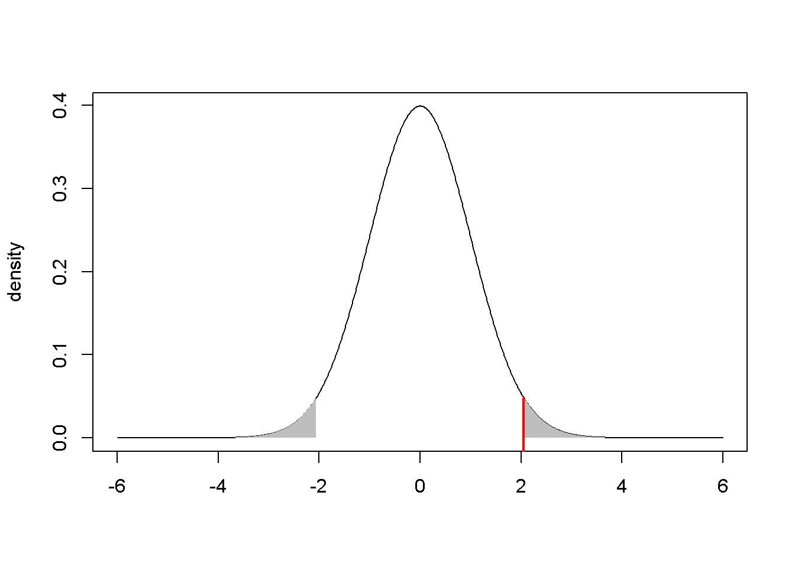

Chapter 5 Hypothesis Tests
5.1 Steps of Hypothesis Testing
Statistical hypothesis testing provides a rigorous framework for using data to provide evidence for or against claims.
For example, suppose that you are working for a start-up that develops education software for children. You’re working on a new software package and are now trying to determine how much to charge. Based on experience and market trends, the leadership team thinks £50 is reasonable. As the data scientist, you are asked to do some research.
The plan is for you to conduct a survey to check how much people would be willing to pay for the software. The leadership team will plan to charge £50 unless there is substantial evidence that people are willing to pay more. Your objective is to use the survey data to determine if the company should re-think the £50 price point.
You design a survey and send it to \(n=30\) potential customers. After everyone has responded, you find that the average willingess to pay in your sample is \(\bar{x}=55.7\) pounds and \(s^2=64.8\).
Now, what does this mean? We know that we cannot stop here and conclude that people are willing to pay more than £50 because if we had asked a different group of customers, our sample mean could change (and perhaps be lower than £50).
Our approach will be to carry out a hypothesis test to formally decide what to do.
Step 1: State the null and alternative hypotheses
The framework of hypothesis testing requires us to specify two mutually exclusive hypotheses: the null hypothesis \(H_0\) and the alternative hypothesis \(H_1\). Specifically, we should choose \(H_0\) to be the case of “no effect” or “no change” and choose \(H_1\) to be the case of what we want to show.
Here, we are investigating whether people are willing to pay more than £50 on average so \(\mu>50\) will constitute the alternative.
\[\begin{align*} H_0:&\ \mu\leq50\\ H_1:&\ \mu>50 \end{align*}\]
Step 2: Choose a test and significance level
To determine which test is appropriate, we must first address the following questions.
- How many parameters do we have? (one = one-sample test, two = two-sample test)
- Do we know the population variance? (yes = \(z\)-test, no = \(t\)-test)
In our case, we only have one parameter \(\mu\) (the average WTP in the population) and we do not know the population variance, but have an estimate of it in our sample. Therefore, we should use a one-sample \(t\)-test.
\[t_{df} = {\bar{X}-\mu\over S/\sqrt{n}}\]
Finally, we will choose \(\alpha=0.01\) so that we are fairly confident that if we detect deviations from £50, they reflect real deviations in the population.
Step 3: Compute the observed test statistic
Since we are using a one-sample \(t\)-test, our observed test statistic is: \[t_{obs}={\bar{x}-\mu_0\over s/\sqrt{n}} = {55.7 - 50\over \sqrt{64.8}/\sqrt{30}}=3.878\]
## [1] 3.878Our observed test statistic provides a measure of “evidence” against the null hypothesis. In particular, we know that under the null hypothesis, the test statistic follows a \(t_{df}=t_{n-1}=t_{29}\) distribution. This distribution (plotted below) represents the distribution of sample evidence given that the null is true. Our observed test statistic (the dashed red line) shows that the event we observed (\(\bar{x}=55.7, s^2=64.8\)), seems fairly unlikely under the null.
Our next task will be to compute this probability more formally.

Step 4: Calculate the p-value
The p-value is the probability of getting sample evidence as or more extreme than what we actually observed given that the null hypothesis is actually true. Remember that the test statistic is our measure of “sample evidence” – as the observed test statistic gets large, that will provide more evidence against the null hypothesis.
Since we are working with a “greater-than” alternative, our p-value will be
\[\begin{align*} \text{p-value} &= P(t_{df}>t_{obs}\ | \ H_0 \text{ is true})\\ &= P\left(t_{n-1}>{\bar{x}-\mu_0\over s/\sqrt{n}}\ \big|\ \mu\leq50\right)\\ &= P\left(t_{29}>{55.7 - 50\over \sqrt{64.8}/\sqrt{30}}\right)\\ &= P\left(t_{29}>3.878\right)\\ &\approx 0.0003 \end{align*}\]
## [1] 0.000278Notice that this value just corresponds to the region to the right of the observed test statistic. Since this probability is so small, it is hard to see the shaded area on the original plot. We can therefore create a “zoomed in” plot next to the original.

Step 4: Make a statistical decision and interpret the results
Once the p-value has been calculated, the “decision rule” can be described as follows.
\[\begin{align*} \text{ if p-value }\leq \alpha &\ \text{ reject } H_0\\ \text{ if p-value }> \alpha &\ \text{ fail to reject } H_0\\ \end{align*}\]
Where does this rule come from? Since \(\alpha\) is the maximum p-value at which we reject \(H_0\), then we are ensuring that there is at most a \(100\alpha\%\) chance of committing a type I error. That is, if we found the p-value to be large, say 40%, then there would be a 40% chance of mistakenly deciding that the true WTP exceeded £50 when it in fact did not. For most problems, an error rate of 40% is too large to tolerate. In the social sciences, we normally choose \(\alpha \in\{0.1, 0.05, 0.01\}\) which corresponds to error rates of 10%, 5%, and 1%.
In the context of this problem, we find the p-value is roughly 0.03%. This means that if the true average WTP in the population is less than £50, there is a 0.03% chance that we would have observed sample evidence as or more extreme than what we did observe (\(\bar{x}=55.7, s^2=64.8\)). This is very small – in fact, much smaller than the 5% error rate we can tolerate. Therefore, we decide to reject the null hypothesis and conclude that it is more likely that the true average WTP in the population exceeds £50.
We can take these results back to the leadership team in our company to convince them that they should consider raising the price.
5.2 Connection to Confidence Intervals
There is an intimate connection between hypothesis tests and confidence intervals. We will now go through the details to see why.
To start, remember that our decision rules for hypothesis testing take the following form.
\[\begin{align*} \text{ if p-value }\leq \alpha &;\ \text{ reject } H_0\\ \text{ if p-value } > \alpha &;\ \text{ fail to reject } H_0\\ \end{align*}\]
This can also be described visually. Suppose you carry out a two-sided hypothesis test with \(\alpha=0.05\) and compute a test statistic \(z_{obs}=2.054\) and a corresponding p-value equal to 0.04. This corresponds to a total area equal to 0.04 in the lower and upper tails of the distribution of the test statistic.

We can also work out what value (on the x-axis) corresponds to an area of \(\alpha/2=0.05/2=0.025\) in the upper tail.
## [1] 1.96
Now the dotted black line is at the point \(z_{\alpha/2}=1.96\) – i.e., the value such that the upper tail area is equal to \(\alpha/2=0.025\). Notice that our shaded area falls to the right of this line, so by our decision rule, we would reject the null.
But, notice that we would reject the null for any test statistic (solid red line) that falls to the right of the critical value \(z_{\alpha/2}\) (dotted black line).
Therefore, the following would be an equivalent set of decision rules.
\[\begin{align*} \text{ if } \big|z_{obs}\big|\geq z_{\alpha/2} &\ \text{ reject } H_0\\ \text{ if } \big|z_{obs}\big| < z_{\alpha/2} &\ \text{ fail to reject } H_0\\ \end{align*}\]
Remember that a confidence interval is a range of plausible values, which we can now formally define as the the range of parameter values that would not be rejected by our hypothesis test. In this case, the “acceptance region” is defined as follows.
\[\begin{align*} \big|z_{obs}\big|< z_{\alpha/2} &\implies \left|{\bar{x} - \mu_0 \over \sigma/\sqrt{n}}\right|<z_{\alpha/2}\\ &\implies -z_{\alpha/2}<{\bar{x} - \mu_0 \over \sigma/\sqrt{n}}<z_{\alpha/2}\\ &\implies -z_{\alpha/2} \times {\sigma \over \sqrt{n}} <\bar{x} - \mu_0 < z_{\alpha/2} \times {\sigma \over \sqrt{n}}\\ &\implies -\bar{x}-z_{\alpha/2} \times {\sigma \over \sqrt{n}} < - \mu_0 < -\bar{x} + z_{\alpha/2} \times {\sigma \over \sqrt{n}}\\ &\implies \bar{x}-z_{\alpha/2} \times {\sigma \over \sqrt{n}} < \mu_0 < \bar{x} + z_{\alpha/2} \times {\sigma \over \sqrt{n}} \end{align*}\] This last line is the exact form of a confidence interval!
5.3 Hypothesis Testing in R
We can use the t.test( ) function to carry out both one and two-sample \(t\)-tests in R. (Note: There are no built-in \(z\)-test functions in R because when we work with real data, we never know the population variance!)
ONE-SAMPLE \(t\)-TEST
t.test(mydata, alternative, mu, conf.level)
mydata: data on the variable of interest
alternative: what type of alternative hypothesis is specified? (options: “two.sided”, “greater”, “less”)
mu: the value of \(\mu\) under the null hypothesis
conf.level: confidence level of the test (\(1-\alpha\))
TWO-SAMPLE \(t\)-TEST
t.test(mydata1, mydata2, alternative, mu, conf.level)
mydata1: data on the first variable of interest
mydata2: data on the second variable of interest
alternative: what type of alternative hypothesis is specified? (options: “two.sided”, “greater”, “less”)
mu: the value of the difference \(\mu_1-\mu_2\) under the null hypothesis
conf.level: confidence level of the test (\(1-\alpha\))
PROBLEM 1: The EuStockMarkets data set in R provides daily closing prices of four major European stock indices: Germany DAX (Ibis), Switzerland SMI, France CAC, and UK FTSE. Using this data set, test to see if there are differences in the closing prices of the SMI and CAC indices. Carry out this test at the 5% significance level and do not assume equal variances.
Solution:
# load the data
data(EuStockMarkets)
# create the SMI variable which is the second column of the EuStockMarkets data
SMI = EuStockMarkets[,2]
# create the CAC variable which is the third column of the EuStockMarkets data
CAC = EuStockMarkets[,3]
# execute the two-sample t-test
t.test(SMI, CAC, alternative="two.sided", mu=0, conf.level=0.95)##
## Welch Two Sample t-test
##
## data: SMI and CAC
## t = 28, df = 2305, p-value <2e-16
## alternative hypothesis: true difference in means is not equal to 0
## 95 percent confidence interval:
## 1068 1228
## sample estimates:
## mean of x mean of y
## 3376 2228We find a p-value much smaller than \(\alpha=0.05\), so we can reject the null and conclude that there are differences in the closing prices between the Swiss SMI and French CAC stock indices.